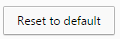
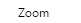
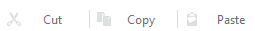

#Run a teamviewer session based on provided ip, and password #inputs: tvIp=[] tvPassword=[] #Usage: teamviewer_launcher.sikuli tvip=[] tvPassword=[] ############################################################### #common code for every sikuli code. Do not remove this section from commonlib import * ############################################################### #YOUR code start here ############################################################### #This is your check for the inputs that you are expecting. def Check_args(): #checking for required arguments Check_arg('tvIp') Check_arg('tvPassword') Check_args() ############################################################ #Main program definitions code start from this point #Any global variables here #Any definitions are here #launch the main Miranda Isolo Control software #Select Mirando Slot Number def Launch_Teamviwer(): tv_title = 'Teamviewer' mycmd = 'auto_windows_manager.exe windows_title=\"' + tv_title + '\" windows_action=1' my_status = Run_cmd(mycmd) if int(my_status) == 0: Print_debug('Teamviewer controller is already running. Use current session.') else: Print_debug('Launching new teamviewer controller...') Launch_winapp('Teamviewer') my_status = Run_cmd(mycmd) if int(my_status) == 0: Print_debug('New teamviewer launched successfully.') else: Exit_program('Teamviewer failed to run.', 2) type('+', KeyModifier.CTRL) find(); click() zoompercent = Get_arg('zoomPercent') find(Pattern().similar(0.80)); click(Pattern().similar(0.80)); wait() if zoompercent == '100': Print_debug('Chrome browser is already at correct 100% zoom setting.') elif zoompercent == '110': click(Pattern().targetOffset(138,-1)) elif zoompercent == '125': click(Pattern().targetOffset(138,-1)); click(Pattern().targetOffset(138,-1)) elif zoompercent == '150': click(Pattern().targetOffset(138,-1)); click(Pattern().targetOffset(138,-1)); click(Pattern().targetOffset(138,-1)) elif zoompercent == '175': click(Pattern().targetOffset(138,-1)); click(Pattern().targetOffset(138,-1)); click(Pattern().targetOffset(138,-1)); click(Pattern().targetOffset(138,-1)) elif zoompercent == '200': click(Pattern().targetOffset(138,-1)); click(Pattern().targetOffset(138,-1)); click(Pattern().targetOffset(138,-1)); click(Pattern().targetOffset(138,-1)); click(Pattern().targetOffset(138,-1)) else: Exit_program('zoomPercent given is too large not in range[100, 110, 125, 150, 175, 200]: ' + zoompercent, 2) find(Pattern().similar(0.80)); click(Pattern().similar(0.80)); def Launch_Firefox(): new_firefox_title = 'Mozilla Firefox Start Page' if Get_arg('firefoxTitle'): new_firefox_title = Get_arg('firefoxTitle') mycmd = 'auto_windows_manager.exe windows_title=\"' + new_firefox_title + '\" windows_action=2' my_status = Run_cmd(mycmd) if int(my_status) == 0: Print_debug('New firefox already existed. Use current session.') else: Print_debug('Launching new firefox...') Launch_App('mozilla firefox') my_status = Run_cmd(mycmd) if int(my_status) == 0: Print_debug('New firefox ran successfully.') else: Exit_program('New firefox failed to run.', 2) #Adjusting zoomPercent #First reset the zoom to default find(Pattern().similar(0.80)); click(Pattern().similar(0.80)); find(); doubleClick(Pattern().targetOffset(2,37)) zoompercent = Get_arg('zoomPercent') if zoompercent == '100': Print_debug('Chrome browser is already at correct 100% zoom setting.') elif zoompercent == '110': click(Pattern().targetOffset(89,34)) elif zoompercent == '120': click(Pattern().targetOffset(89,34)); click(Pattern().targetOffset(89,34)) elif zoompercent == '133': click(Pattern().targetOffset(89,34)); click(Pattern().targetOffset(89,34)); click(Pattern().targetOffset(89,34)) elif zoompercent == '150': click(Pattern().targetOffset(89,34)); click(Pattern().targetOffset(89,34)); click(Pattern().targetOffset(89,34)); click(Pattern().targetOffset(89,34)) elif zoompercent == '170': click(Pattern().targetOffset(89,34)); click(Pattern().targetOffset(89,34)); click(Pattern().targetOffset(89,34)); click(Pattern().targetOffset(89,34)); click(Pattern().targetOffset(89,34)) elif zoompercent == '200': click(Pattern().targetOffset(89,34)); click(Pattern().targetOffset(89,34)); click(Pattern().targetOffset(89,34)); click(Pattern().targetOffset(89,34)); click(Pattern().targetOffset(89,34)); click(Pattern().targetOffset(89,34)) else: Exit_program('zoomPercent given is too large not in range[100,110,120,133,150,200]: ' + zoompercent, 2) find(Pattern().similar(0.80)); click(Pattern().similar(0.80)) def Launch_Browser(): mybrowser = Get_arg('browser') if mybrowser.lower() == 'chrome': Launch_Chrome() elif mybrowser.lower() == 'firefox': Launch_Firefox() else: Exit_program('Unsupported browser enter: ' + mybrowser, 2) ####################################################### #Main program flow Launch_Browser()